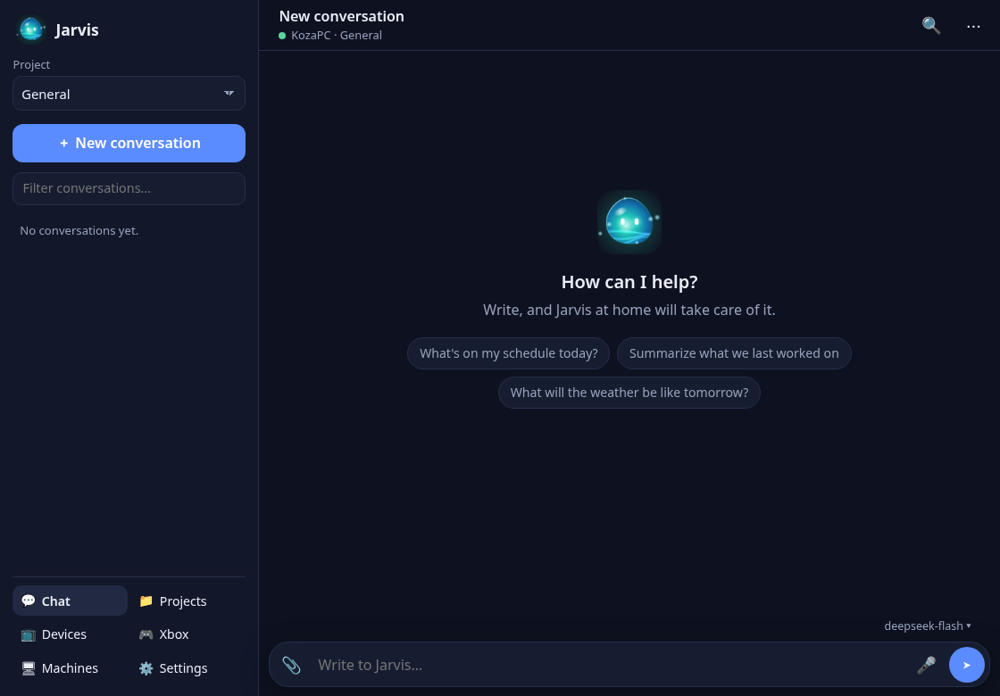
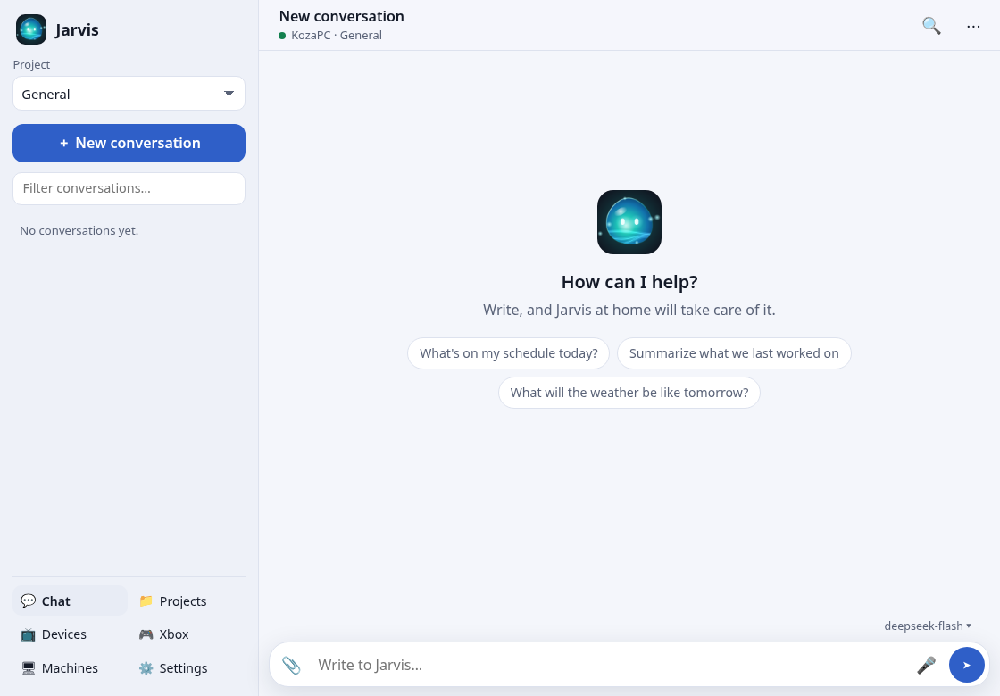
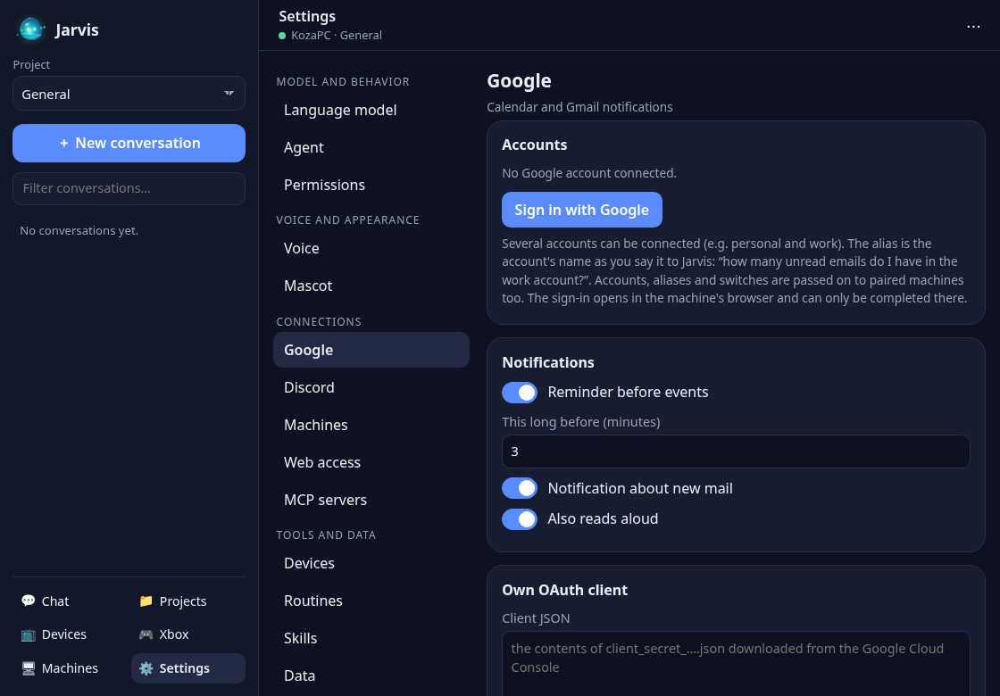
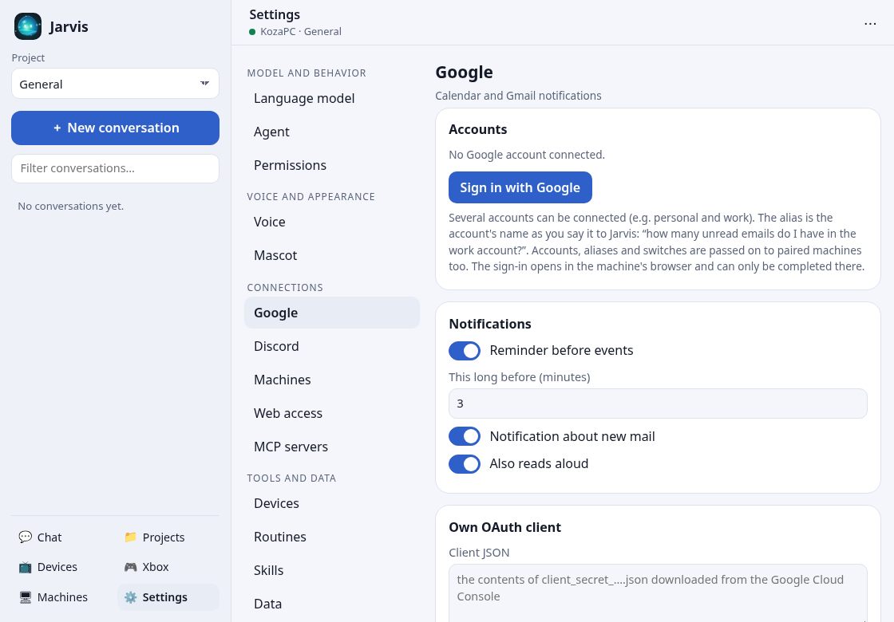

Jarvis answers by text or voice, manages your calendar, watches your mail and controls your home – and everything stays on your machines. No Jarvis cloud, no account.


One app that talks, acts and remembers – with your keys and your data.
Ask in plain language; Jarvis reads and edits files, runs commands (with your permission), searches the web and keeps plans.
Wake word, speech recognition and spoken answers – all running locally on your computer.
Create events, get reminders and a daily briefing; new-mail notifications from Google Calendar and Gmail.
TVs, air conditioners, switches, cameras and radios on your network – just a chat or voice command away!
Pair your machines: tasks, projects, memory and conversations follow you between them, over encrypted connections.
Recurring automations: “every weekday at 7:30 turn on the living-room AC”, “on the last Friday of every month remind me about the bills”. Ask by chat or voice; they run on the machine you pick.
Ready-made procedures kept in a folder: Jarvis loads one only when your request fits it (e.g. “write a commit message”). Write your own with a single SKILL.md file, and switch any of them, or all of them, off in Settings.
Watch and control your Xbox from your phone or browser: the console’s picture (up to 4K) and sound arrive over your local network without re-encoding. Play with a Bluetooth Xbox controller or on-screen joysticks, and pass the picture on, view-only, to a TV or into OBS.
Any model (local Ollama or a cloud API), MCP servers and a web interface for your phone.
Jarvis finds the devices on your network and lets you control them from the chat, even with voice commands. It runs on your desktop or your server and is reachable from your phone through its own secure web interface.


Version latest – free, for personal use. The app updates itself.
flatpak update keep it up to date: flatpak install --user https://flatpak.jarvisai.hu/hu.jarvis.app.flatpakref
Download Flatpak file
All releases and release notes
Jarvis is a personal, non-commercial project. Installers are not yet signed by a platform vendor, so Windows SmartScreen or macOS Gatekeeper may ask for confirmation on first start.
There is no Jarvis server: the developer does not collect, receive or store your data. Google data is used only to provide the calendar and mail features you ask for.
With the user's permission, Jarvis connects to their Google account to show, create and update events in Google Calendar and to notify about newly arrived email in Gmail (message metadata only: sender, subject, date, labels).
The Google integration is optional. Jarvis is fully functional without it; it is only needed for the calendar and mail features. To use it you need your own Google Cloud project with an OAuth client (Client ID and Client secret), which you enter in Jarvis's settings. Jarvis has no central application ID and no server, so the access tokens belong solely to your project and your account, and stay on your machine in the operating system's keyring.